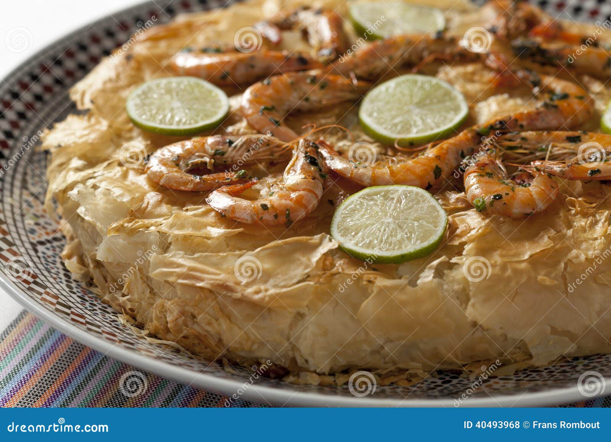

Recette Marocaine : Fish Pastilla
Une délicieuse pastilla de poisson
Ingrédients principaux
- 500 g de filets de poisson blanc (merlu, colin, etc.)
- 250 g de crevettes décortiquées
- 2 oignons émincés
- 2 gousses d'ail hachées
- 1 citron confit en petits morceaux
- Persil et coriandre hachés
- Épices : paprika, cumin, curcuma, poivre, sel
- Jus d'un citron
- Feuilles de pastilla
- Beurre fondu et huile pour badigeonner
- Vermicelles de riz
Méthode de cuisson
- Faites revenir l'oignon et l'ail dans un peu d'huile d'olive.
- Ajoutez les morceaux de poisson, les crevettes, les épices, le citron confit, le jus de citron, et les herbes.
- Laissez cuire à feu doux jusqu'à évaporation du liquide, puis laissez refroidir.
- Disposez une feuille de pastilla dans un moule beurré.
- Ajoutez une couche du mélange de poisson, puis repliez les bords.
- Badigeonnez de beurre fondu et enfournez à 180°C pendant 20 à 25 minutes jusqu'à ce qu'elle soit dorée.
- Servez chaude, décorée de rondelles de citron et de persil.